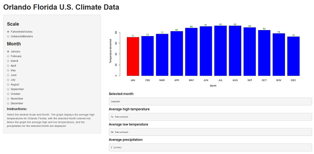

- To visit Disney, Universal or another theme park?
- To attend the University of Central Florida?
- To the Kennedy Space Center to watch a rocket launch?
Are you curious about the weather?
- How HOT does it get?
- How COLD does it get?
- How much does it RAIN?
A Shiny application developed by dboiani
for Coursera's Developing Data Products class project

# input monthly temperatures in Fahrenheit
tempHigh <- c(71,73,77,82,88,91,92,92,89,84,78,72)
# converted to Celcius
round(((tempHigh-32)*5)/9, digits=1)
## [1] 21.7 22.8 25.0 27.8 31.1 32.8 33.3 33.3 31.7 28.9 25.6 22.2
# input monthly precipitation in Inches
precipitation <- c(2.76,2.83,3.78,2.48,3.31,8.74,7.09,7.83,6.02,3.31,2.4,2.64)
# converted to Millimeters
round(precipitation*25.4, digits=0)
## [1] 70 72 96 63 84 222 180 199 153 84 61 67
http://www.usclimatedata.com/climate/orlando/florida/united-states/usfl1021
https://dsdboiani.shinyapps.io/DevelopingDataProductsProject/